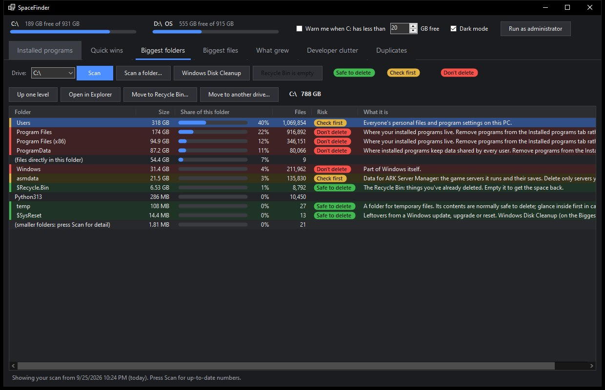

> WINDOWS DISK-SPACE TOOL
SpaceFinder
LiveSee where your drive space went, and get it back.
github.com/alid0n/spacefinder-releases
> ABOUT
Find out where your Windows drive space went, and get it back. SpaceFinder ranks installed programs, folders and files by size, explains what each one is with a colour-coded safety rating, spots duplicates and developer clutter, and shows what has grown since your last scan. Free, with no installer: download it and run it.
> FEATURES
- Quick wins: The biggest safe savings on your drive, gathered on one tab.
- What grew: Saved scans are compared, so you can see exactly which folders have been filling up.
- Programs by size: Desktop, Microsoft Store and Epic apps side by side, with when each was last used and a one-click uninstall.
- Duplicates and developer clutter: Finds repeated files, build caches and emulator images that quietly take up gigabytes.
- Knows what things are: Files, folders and programs come with a plain-English description and a rating: safe to delete, check first, or don't delete.
- Careful by design: Every removal asks first. Items go to the Recycle Bin or are deleted permanently, your choice, and high-risk items stay protected unless you switch that off.
- Low-space alert: An optional tray icon warns you before the drive fills up.